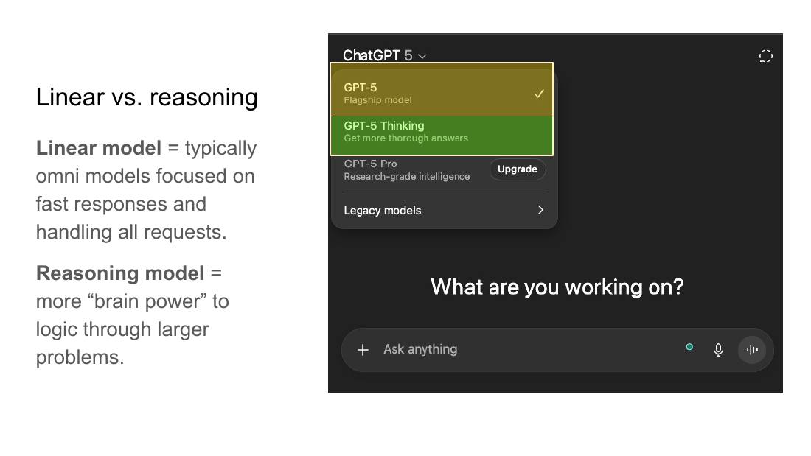
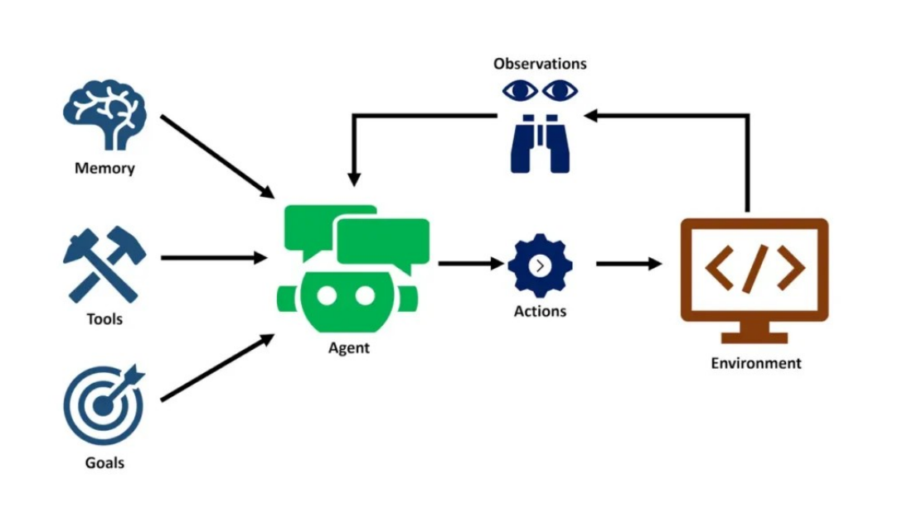
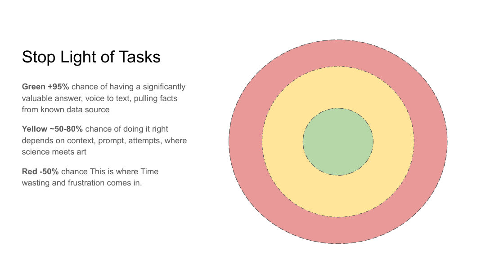
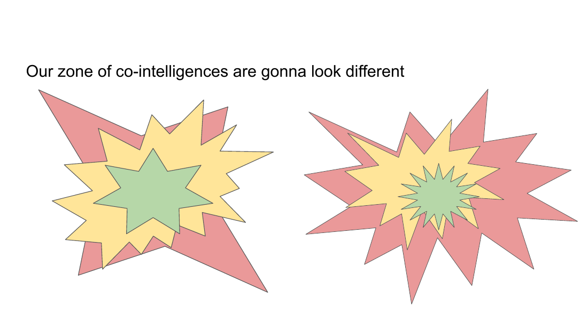
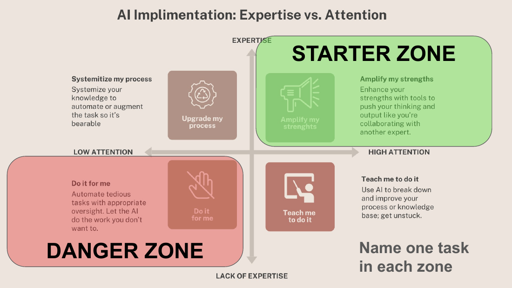
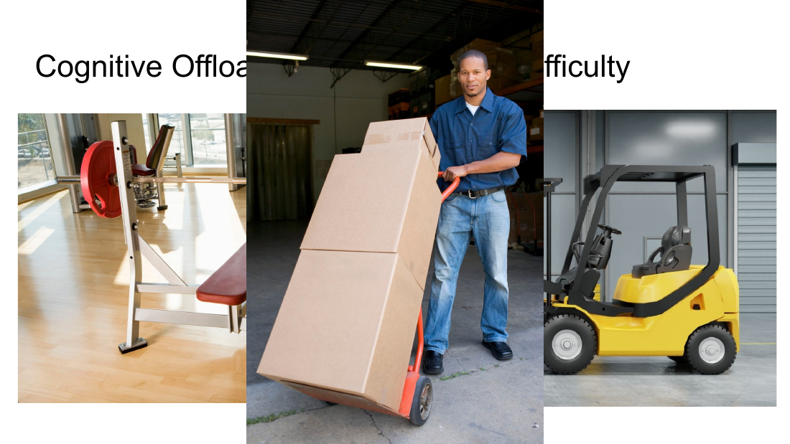
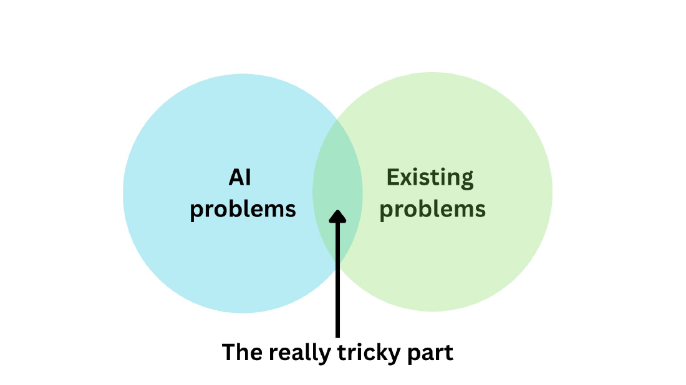
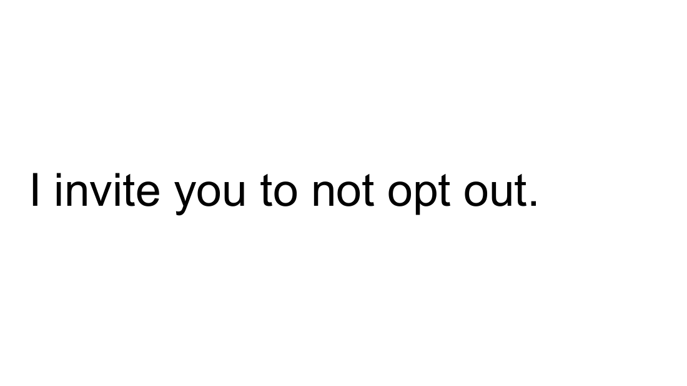

For the Center for Supportive Schools
How AI is different in 2026.
A place to revisit what we covered on May 19 — the slides, the concepts, and a handful of resources to take with you into your work.
This page was co-written with AI. I created the rough draft using the context of the presentation, our recording transcript, and my previous writing on these topics. Then I edited a text file to make it sound more like my voice.
If the deck doesn't load, make sure it's published to web in Google Slides (File → Share → Publish to web).
Where you're starting from
Which kind of AI user are you, right now?
Posture 01
The Tinkerer
Suspicious by default. Challenges the model, picks it apart, treats it like a coworker who might be wrong. Builds intuition through friction. "I tend to feel like you're going to be wrong about something, and I tend to pick it apart."
Posture 02
The Quick Hitter
Uses AI for one-off tasks — drafting, summarizing, an image, a flyer. In and out. "I really utilize it honestly for image generation the most. I'll take the idea and then go into Canva."
Posture 03
The Process Builder
Reaches for AI to standardize something they do over and over. Custom GPTs, gems, templates. Wants the tool to do the same job the same way each time.
Posture 04
The Manual Holdout
Ethically wary, hands-on, still writes from scratch. "I have some ethical concerns with AI, so I'm okay with still engaging in the manual process." Opting out is a real and defensible choice.
The shape of the thing
How AI actually works — the Plinko model.
A traditional program is deterministic. Same input, same output, every time. If the rules and the data don't match, you get an error. Think of Excel throwing a red error cell, or that scene from Big where Tom Hanks has to type the line exactly right or the game just dies.
Generative AI doesn't work like that. It's probabilistic. Your prompt drops in the top of the machine like a ball at the top of a Family Feud Plinko board. It bounces through billions of weighted pegs and lands somewhere on the bottom — usually in the middle, sometimes way off to one side. There's no "error." It always gives you something.
Hallucinations aren't a bug. They are the feature. The same mechanism that lets it be creative is the mechanism that lets it be wrong. — Connor, on probabilistic systems
That's the whole game. When you say "professional tone" or "use a sonnet structure," you're not programming the system — you're nudging the ball toward a specific part of the board. Sometimes it lands where you want. Sometimes it doesn't. Treat every response as a draw from a distribution, not as the answer.
What changed
Three things are new in 2026.
1. Omni models. The same model handles text, images, audio, and video. You can paste a screenshot, hum a melody, drop in a PDF — and it works on all of it together.
2. Reasoning models. Linear models answer immediately, in one pass through the Plinko board. Reasoning models (Opus 4.7, GPT-5 thinking, Gemini Pro thinking) take many passes — they brainstorm, backtrack, evaluate their own work, and sometimes do web searches in the middle of thinking. The output is slower, more grounded, and 25–50× more expensive to run. The "how do I give a child a good education" demo we walked through is a good example: the reasoning model went out, pulled real source documents, and came back with cited claims instead of confident vagueness.

3. Agents. Models now pick up tools. They search the web, write code to do math, read files they can't parse directly, and on some platforms (Gemini, Claude Computer Use) they reach out and act on your software — creating slides, filling forms, running scripts. The line between "chatbot" and "thing that does work" has mostly dissolved. The Animal Farm study guide we looked at on the call — 800 lines of code, generated in about seven minutes — was an agent demo, not a chat response.

Some tasks AI is now superhuman at. Right next to those, it can't move a PowerPoint slide so the title aligns. The edge between capable and useless is jagged, not smooth. — On the limits of these tools
Why one person's green is another's red
The jagged edge — and your zone of code intelligence.
The stoplight diagram is a helpful simplification: green tasks AI handles well, yellow tasks need oversight, red tasks waste your time. But the real edge isn't a clean line. Tasks that sit next to each other in difficulty can sit on opposite sides of the edge.

And — this is the part educators recognize instantly — there's no single edge for everyone. You have your own zone of code intelligence: the band where your judgment, context, and skill let you get useful work out of AI without getting burned. Someone else's band is somewhere else entirely. A teacher who knows Animal Farm backwards can tell when the model invents a chapter. A novice can't.

Your job isn't to memorize a list of green tasks. It's to learn the shape of your own edge by trying things — and to notice the moments where you've crossed it.
Where to actually start
The two questions: expertise and attention.
When you're picking a task to hand to AI, ask two questions: How much do I know about this? and How much attention am I willing to give the output? The honest answers put you in one of four quadrants.

The Danger Zone is mostly where people get scared by AI — because they're using it there. Don't.
What gets offloaded matters
Narrow offloading, not broad offloading.
Research on factory automation going back to the 80s is unambiguous: when workers broadly offload — press a button, the task gets done — their skills decline within about three months. They lose the ability to do the work they used to do.
Narrow offloading is different. You hand off a slice of the task — formatting, transcription, a first draft — and keep the thinking. Some of the best automation in factories was designed not to be maximally simple but to keep humans cognitively present, because that turned out to reduce injuries and preserve expertise.
Bench press, forklift, dolly. The bench press builds you. The forklift replaces you. The dolly does the heavy part while you steer. — Three ways of relating to a tool

Educators already have language for this. Germane difficulty — sometimes called desirable difficulty or productive struggle — is the friction that builds skill. Extraneous difficulty is the friction that burns cognitive energy without building anything: formatting, hunting for information, fighting your tools. AI should be eating your extraneous difficulty. It should not be eating your germane difficulty.
I don't put anything into AI unless I'm willing to read the entire response.
The single most important habit
The Achilles heel: it answers anyway.
Ask a model to do something it cannot do — because it lacks the data, the permission, or the capability — and most of the time it will answer anyway, with confidence. Guardrails are better than they used to be. They are not enough.
The Strait of Hormuz example from the session is the clearest version of this I have. Major news outlets reported "no ships are moving" for over a week because every system pulled from the same GPS data feed, and every ship was spoofing its location. Two journalists with binoculars on a beach got a more accurate picture than the international AI-augmented monitoring networks did.
Your expertise, in your context, is your only real edge. Bring it.
Before you trust the output, ask:
- Is this a problem AI can actually solve?
- Does the model have enough good data to solve it?
- How close is this output to the real world I live in?
Where the work is
The problems with AI.
A few of the concerns that came up in the chat — the ick, the ethics, the energy use, the slop — are real and well-founded. A few are less about AI than about problems we already had, that AI is now amplifying. Both lists matter, but it's worth telling them apart.

Bias in outputs
The doctor/nurse image test still fails. Models reflect the bias of their training data, and the more complex the request, the more bias slips in. There's also active political pressure on companies to tilt outputs.
Deepfakes & the liar's dividend
A $20/month tool was enough to forge an audio clip framing a principal. And once fakes are plausible, real things get dismissed as fakes too. The misinformation cost compounds in both directions.
Labor & IP
Workers in lower-wage countries annotate the data. Every major AI company is being sued by someone whose work was scraped without consent. The supply chain for these models is not clean.
Environment — short-term
The Titan data center outside Memphis is running on natural-gas trailers designed for FEMA emergencies. These are concentrated in low-income communities. This is happening now, not in some hypothetical future.
Environment — long-term (Jevons paradox)
Models get more efficient, but total usage grows faster. The structural impact is from corporate and government use, not from any one person's prompts. Individual abstinence won't move the needle here — policy will.
Attention crisis, amplified
We were already losing the fight for focus. Now we have infinitely responsive companions and infinite generated content. The cost isn't measured in any one interaction — it's measured in habits.
A request
Don't opt out — at least not entirely.

I respect the manual-holdout posture. There are tasks I keep manual on purpose. But fully opting out — never touching the tools, never building intuition — has costs that compound:
You lose your immune system. If you've never used a generative model, you can't recognize generated content. You're more likely to trust the spammy site, fall for the deepfake, miss the AI-drafted email pretending to be from a colleague.
You lose your voice in the conversation. "This feels icky" is real, but it's easy to dismiss. "This is a bad use of AI because it broadly offloads the entire task, and the user has no expertise to catch the errors" — that lands. Informed critique works. Tepid concern doesn't.
You leave gains on the floor. The work you do is too important to skip the multipliers. If a tool can make your reach larger or your friction smaller, that matters — even if you don't love every part of how the tool got here.
You become a positive role model. Shame doesn't change behavior. Watching a thoughtful person use a tool thoughtfully — that does.
From the chat and the conversation
What I heard from you.
Some of the threads that came up during the session — anonymized, lightly trimmed. These are mostly verbatim from the chat and our recording. Most of them are anchoring what I'm building for Session 2.
On AI as helpful assistant
"It supports our work. Our job has so many facets — sometimes AI can be the nice little assistant that swoops in and helps with the tedious things."
— a participant, on the upside
On cognitive offloading
"A facet of our brains isn't being utilized as much as it used to. I feel like we might be losing the ability to think about things in a certain way because we're not using it — we're passing it off to our little AI assistant."
— a participant, on the downside
On accessibility
"I worked with someone who was hearing-impaired, and just the ability for AI to summarize and take notes for a meeting — the accessibility benefits are something I hadn't fully acknowledged."
— a participant, on a good use
On the ethical pull
"I have ethical concerns with AI, so I'm okay with still engaging in the manual process. Even when I'm using it for something constructive, I feel dirty."
— a participant, on the holdout posture
On data centers and equity
"Data centers are popping up in residential areas. Every time you use ChatGPT, my electricity bill goes up. These are being placed in low-income neighborhoods whose autonomy is being ignored."
— a participant, on the environmental cost
On students reaching for AI too early
"I literally caught a fifth-grader having a romantic conversation with AI. They're so young. It's starting."
— a participant, on the classroom reality
On AI's confident wrongness
"It does the best it can and then tells you it's done great."
— a participant, in chat
The killer analogy
"It's Michael Scott driving into the lake."
— a participant, in chat. On AI confidently going the wrong way.
Next time we'll focus on
Session 2 · June 1, 9:30 AM
Based on what came up — especially the request to talk about how this lands in schools — here's where I'm pointing Session 2:
- How to coach teachers and students on AI use. What to actually say in a faculty meeting or to a student who's overusing it. This is the question I want to anchor.
- Prompting challenges, with live support. We'll work through prompting exercises together, and you'll get to ask for individual support on the specific tasks you're trying to use AI for.
- Custom GPTs / gems / projects. Building one of your own, with Connor's best practices. The piece I didn't get to fully demo.
- Data, privacy, and the CSS-laptop point. What's safe to put into which tool, and where the institutional guardrails actually are.
- The equity question. Lower-income students using AI more without the scaffolding to evaluate its output. What to do about it.
If you have a question or a use case you want me to demo on June 1, send it. I'd rather build the session around what you actually need than what I assume you need.
Take with you
Resources & homework.
A short list — what to play with, where to keep learning, and what to send back to me before Session 2.
Interactive · 5 minutes
NYCPS AI Traffic Light game
Sort 18 real classroom and school-leader AI uses into Red, Yellow, or Green based on official NYCPS guidance. Good for a faculty meeting warm-up.
Play the game →
Homework · 3 minutes
Session 1 exit survey
Tell me what landed, what didn't, and what you want Session 2 to focus on. Clarice's question about how to coach teachers and students will probably anchor part of it.
Fill out the survey →
One-time setup · 5 minutes
Set your custom instructions
The single highest-leverage change you can make. Tell the model to be research-backed, to push back, to not act human. Every chat after that gets better. Set it once on whichever tool you actually use.
More writing
My ongoing writing on AI in learning
More long-form pieces on how I think about these tools in education and learning design. Some of this is one or two layers deeper than today's session went.
Visit the Ideas page →
Thank you for having me.
If anything in the presentation sparked a question — or a concern about how AI is showing up in your school or your work — I'd genuinely like to hear it. The group questions tend to be better than the ones I prepare for, so send them.
I'd rather answer them for everyone in Session 2 than have them sit unanswered. See you June 1.